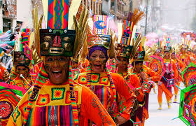
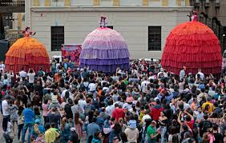

se celebra a principios de año en Pasto, Nariño. Una fiesta que dura una semana de alegría, juego y fantasía,
en la que participan más de 10 000 artistas, unos 2000 músicos y danzantes. Aunque la fecha oficial del carnaval
es del 2 al 7 de enero de cada año, el preludio comienza el 28 de diciembre (día de los inocentes) cuando algunos
niños y grandes pintan con tiza el piso con figuras carnavalescas, en lo que se ha llamado desde hace años el
Arcoíris en el asfalto de la calle del Colorado. Hay otros, que prefieren salir a pedalear en familia, para
empezar a difrutar de estas festividades. Cada evento del Carnaval es especial, como la conmemoración de la
llegada de la familia Castañeda, un grupo familiar de foráneos de los años veinte, que viajaba con todo su
equipaje y menaje de cocina para preparar la comida en cualquier lugar y que por casualidad un día se les
cruzó por el camino esta fiesta, convirtiéndose en el centro de atención.Los personajes caricaturescos son
representados por la abuela extravagante, la hija lista para casarse de blanco en evidente estado de embarazo y
los niños traviesos.La fiesta continúa el 5 de enero con el Día de los Negros, cuando todos los que quieran
participar se dejan embadurnar con pintura negra y si te gusta la rumba puedes escoger el sitio y tu orquesta
preferida para dar rienda suelta a tu sentimiento rumbero.El Día de los Blancos con su desfile magno, es el 6
de enero y es cuando hay que pintarse de blanco con polvo industrial o pintura cosmética.

ese día se abre la feria artesanal en el centro de Ferias y Exposiciones, una muestra manufacturera de varias
partes del mundo, como Egipto, Pakistán, India, Indonesia, Irán, Bolivia, Japón, entre otros. Al mismo tiempo,
en el Aeropuerto de la Nubia hay una programación cultural que es el abrebocas, para quienes llegan de otras
latitudes. la feria taurina tiene también su protagonismo, con un cartel que presenta a los mejores rejoneadores
de renombre internacional. La promoción del café con el mejor aroma del mundo se hace a través del Reinado
Internacional del Café, que cuenta con las representantes de 28 países entre los que se encuentran Colombia,
Venezuela, Cuba, Alemania, Guatemala, Honduras y Haití.Los diferentes desfiles se abren paso por las calles
principales de Manizales. Las reinas participan disfrazadas de manolas en carruajes y otro día van vestidas con
los trajes típicos de cada uno de sus países en el Desfile de las Naciones.Otro es el desfile de la Macarena,
que se lleva a cabo al atardecer y es encabezado por la figura de la Virgen de la Macarena, patrona de la
tauromaquia, la cual es seguida por las autoridades de la ciudad, los toreros y rejoneadores en traje de luces.
El desfile de “Yipaos” es un espectáculo que no hay que perderse.